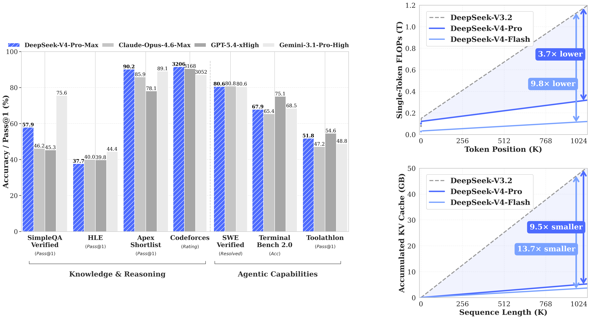
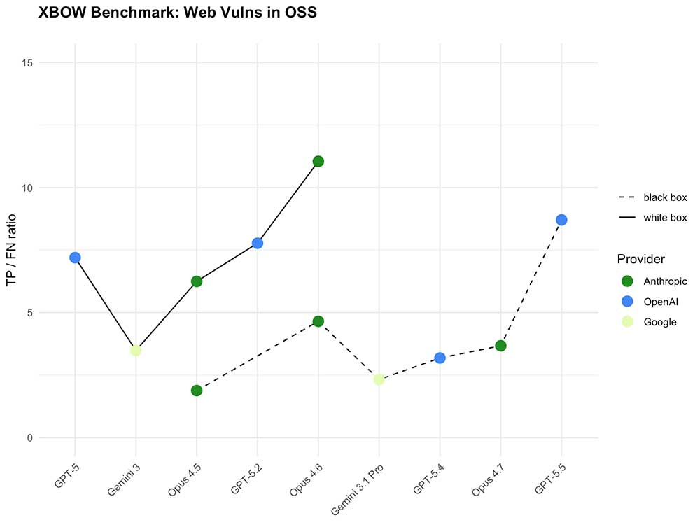

THE FRONT PAGE
EDITOR'S NOTE: In a world increasingly content to let machines ghostwrite our infrastructure, we are finding that the cost of automated efficiency is a fundamental loss of human legibility. #The systematic erosion of the software supply chain through automated negligence.
The latest technical report from DeepSeek outlines V4, a Mixture-of-Experts model pushing context windows to 128K tokens while claiming parity with closed-source front-runners on benchmarks. The catch? No independent validation of its 'balanced' scaling claims, and the usual silence on training data provenance.
Google quietly open-sourced TorchTPU, a compiler bridging PyTorch to its TPU hardware—enabling native execution without TensorFlow. The move eases migration for PyTorch loyalists but locks them deeper into Google’s ecosystem, where TPU-specific optimizations may not travel well beyond Cloud TPU v5e.
MODEL RELEASE HISTORY
No confirmed model releases were detected for this edition date.

By optimizing KV cache compression and sparse attention mechanisms, V4 attempts to handle million-token windows without the usual collapse in inference throughput. However, the reliance on aggressive distillation risks a creeping loss of nuanced reasoning that raw compute usually preserves.

OpenAI’s latest model reportedly matches or exceeds closed-system benchmarks for adversarial tasks—like XBOW’s web vulnerability detection—while sidestepping traditional access controls. The tradeoff? Unclear guardrails for a tool now in the hands of researchers *and* opportunists alike.
The latest iterative bump suggests a future where system design is less about durable code and more about managing the unpredictable latency of bloated inference stacks. We are trading the clarity of deterministic logic for a sophisticated guess that eventually becomes too expensive to debug.